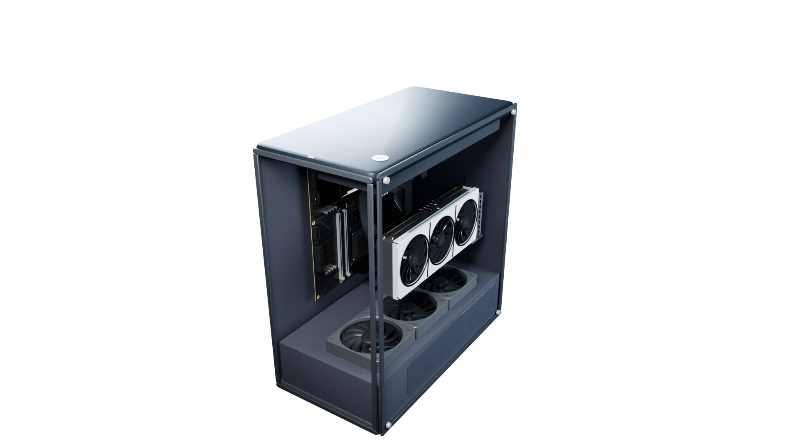

CHECKPOINT / CORRECCIÓN VISUAL
La cámara debe
recorrer, no ampliar.
Comparación de siete posiciones reales de Blender, antes y después. La nueva cámara desciende mientras se aproxima, con encuadre panorámico y más muestras Cycles. Esto todavía no es la animación definitiva de 450 fotogramas.
Comparación de encuadres


Los cambios del deslizador muestran fotografías de control, no una simulación de fluidez. La futura secuencia debe validar cada uno de sus 450 fotogramas, la calidad y el rendimiento bidireccional antes de reemplazar C6.11.
RESULTADO G1 · SIN APROBACIÓN FINAL
La revisión continúa.
0colisiones con piezas sólidas en el nuevo ensayo
48 cmdescenso total de cámara
32muestras Cycles por pose de ensayo
El cruce del panel lateral se produce aproximadamente entre los fotogramas 395 y 399. La sincronización de los títulos tendrá que seguir ese punto, y no los capítulos de la cámara anterior.
VER C6.11 ACTUAL SIN APROBACIÓN ↗